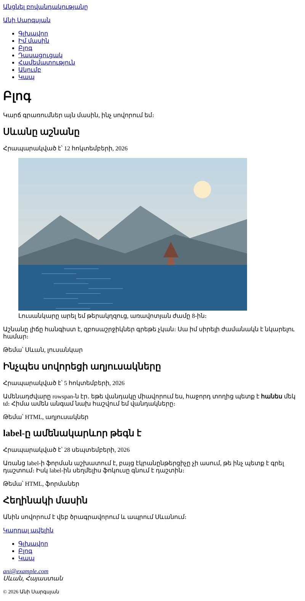
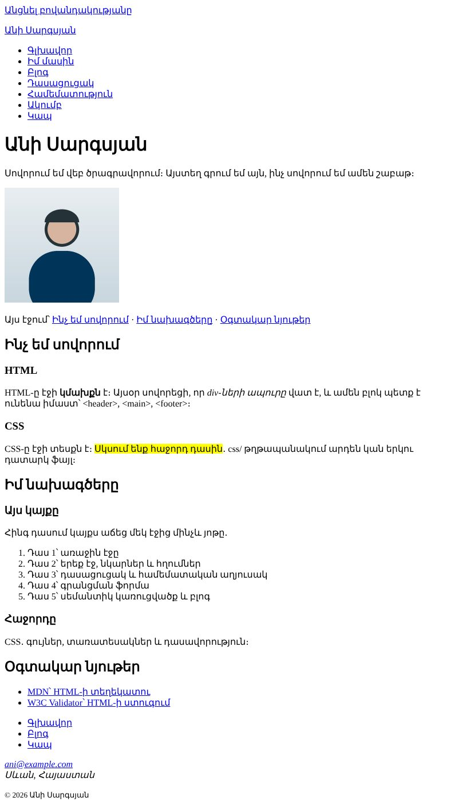

Տնային աշխատանք · HTML Դաս 05 · մինի-նախագիծ
Ամբողջ կայքը վերակառուցում ենք սեմանտիկ թեգերով, լրացնում ենք head-ը և ավելացնում ենք բլոգի էջ երեք գրառմամբ։ HTML-ի մասն ավարտված է․ հաջորդ դասից՝ CSS։
Օգտագործիր միայն Դաս 01–05-ի թեգերը։ class="skip-link"-ը դնում ենք այսօր, բայց այն թաքցնող CSS-ը՝ Դաս 06-ում։ CSS ֆայլերը միացված են, բայց դատարկ են։
Տեսքով կայքը գրեթե չի փոխվում, բայց HTML-ը դառնում է իմաստալից․ բրաուզերը, Google-ը և էկրանընթերցիչը հիմա հասկանում են, որտեղ է մենյուն, որտեղ՝ բովանդակությունը, որտեղ՝ գրառումները։ Նոր է միայն բլոգի էջը։


Սկսիր Դաս 04-ի քո կայքից։ Եթե այն չունես, վերցրու Դաս 04-ի օրինակը։
Վերցրու մեկ էջ, օրինակ՝ pages/about.html, և վերակառուցիր այն։ Երբ այն պատրաստ է, նույն ձևով փոխիր մյուսները։
<body>
<a href="#main" class="skip-link">Անցնել բովանդակությանը</a>
<header>
<p><a href="../index.html">Անի Սարգսյան</a></p>
<nav aria-label="Գլխավոր մենյու">
<ul> ... </ul>
</nav>
</header>
<main id="main">
<section id="about-me"> ... </section>
<section id="likes"> ... </section>
</main>
<footer>
<nav aria-label="Footer-ի հղումներ"> ... </nav>
<address> ... </address>
<p><small>© 2026 Անի Սարգսյան</small></p>
</footer>
</body>Այն թաքցնող CSS-ը (.skip-link) կավելացնենք Դաս 06-ում global.css-ում։ Այսօր ստուգիր, որ Tab-ով այն առաջինն է ստանում ֆոկուս, իսկ Enter-ը տանում է main-ին։
section-ների՝ ամեն մեկը իր թեմայով և id-ովsection սկսվում է վերնագրով#learning և այլն) հիմա տանում են section-ի, ոչ h2-ի id-ինarticle։ Ամեն մեկի ներսում՝ header (վերնագիր և ամսաթիվ), տեքստ և footer (թեմաներ)<time datetime="2026-10-12">12 հոկտեմբերի, 2026</time>։ Մարդը կարդում է տեքստը, իսկ մեքենան՝ datetime-ըfigure + figcaption։ alt-ը նկարագրում է նկարը, figcaption-ը ավելացնում է նոր տեղեկություն։ Դրանք չպետք է կրկնեն իրարaside։ Մեկնաբանության մեջ գրիր, թե ինչու այն section չէՀարցրու քեզ․ եթե այս բլոկը հանեմ էջից և ուղարկեմ ընկերոջս, այն իմաստ կունենա՞։ Գրառումը՝ այո, ուրեմն article է։ «Հեղինակի մասին»-ը՝ ոչ, ուրեմն aside է։
Ամեն էջում՝ իր title-ը և description-ը (աղյուսակը՝ content.md-ում), երեք og: թեգ, favicon և երկու CSS ֆայլ։ Ստեղծիր css/global.css-ը և css/main.css-ը դատարկ։
<meta property="og:image" content="../images/og.jpg">
<link rel="icon" href="../images/favicon.svg">
<link rel="stylesheet" href="../css/global.css">
<link rel="stylesheet" href="../css/main.css">body-ի առաջին մակարդակում պետք է լինեն միայն skip link, header, main, footerdiv այս կայքում պետք չի եղել։ Եթե ունես, մտածիր՝ ո՞ր սեմանտիկ թեգն է ավելի ճիշտheader, nav, main id="main", footersection-ներով, ամեն մեկը id-ովnav, երկուսն էլ aria-label-ովbody-ի առաջին տարրն էarticle՝ ներսում header և footertime datetimefigure + figcaption, որոնք չեն կրկնում alt-ըaside՝ մեկնաբանությամբtitle-ը և description-ըog: թեգ և faviconpages/-ի էջերում| Սխալ | Ինչպես ուղղել |
|---|---|
Մի քանի main էջում | Էջում միայն մեկ main է։ Բովանդակության մասերը՝ section |
header-ը դրված է main-ի ներսում ամբողջ կայքի համար | Կայքի header-ը main-ից դուրս է։ article-ի ներսում header-ը այլ բան է՝ գրառման գլուխ |
Favicon-ը չի երևում pages/-ի էջերում | Մոռացել ես ../-ը։ Բրաուզերը նաև պահում է favicon-ը․ թարմացրու Ctrl+Shift+R-ով |
| Skip link-ը միշտ երևում է | Սպասելի է մինչև Դաս 06 |
Սրանք Դաս 05-ի տնային աշխատանքի կետերն են։ «մինի-նախագծում» նշվածները արդեն կատարել ես վերևի քայլերում, մնացածը կատարիր առանձին ֆայլերում կամ նույն թղթապանակում։
header, nav, main, section, article, footer։ մինի-նախագծումsection-ի տուր id և կապիր նավիգացիայի հետ խարիսխներով։ մինի-նախագծումarticle-ի մեջ՝ ներսում header-ով և footer-ով։ մինի-նախագծումtime՝ datetime ատրիբուտով ամեն գրառման ամսաթվի համար։ մինի-նախագծումfigure և figcaption։ Համոզվիր, որ alt-ը և figcaption-ը չեն կրկնում իրար։ մինի-նախագծումaside՝ կողքի բլոկ։ Բացատրիր մեկնաբանության մեջ՝ ինչո՞ւ այն section չէ։ մինի-նախագծումhead-ը՝ իմաստալից title, description, երեք og: թեգ, favicon։ մինի-նախագծումbody-ի առաջին տարր։ Առայժմ այն միշտ երևում է․ թաքցնելու CSS-ը կավելացնենք Դաս 6-ում։ Ստուգիր Tab-ով, որ այն առաջինն է ստանում ֆոկուս, իսկ Enter-ը տանում է main-ին։ մինի-նախագծումnav footer-ում։ Երկուսին էլ տուր aria-label։ մինի-նախագծումmain-ը, nav-ը, article-ները։ Կա՞ skip link։ Գրիր արդյունքը 4–5 նախադասությամբ։Երբ բաժին 03-ի բոլոր կետերը նշված են, բացիր օրինակը և քո էջը կողք կողքի։ Բացիր երկուսի կոդն էլ խմբագրիչում։ Գտիր մեկ բան, որ դու արել ես այլ կերպ, և մտածիր՝ որն է ավելի հասկանալի և ինչու։ Քո լուծումը կարող է տարբերվել և լինել ճիշտ։